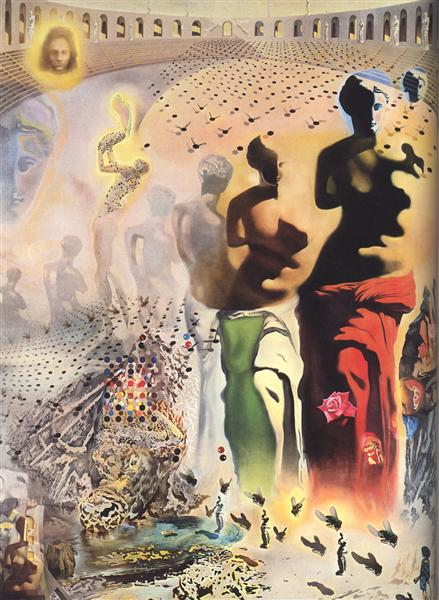
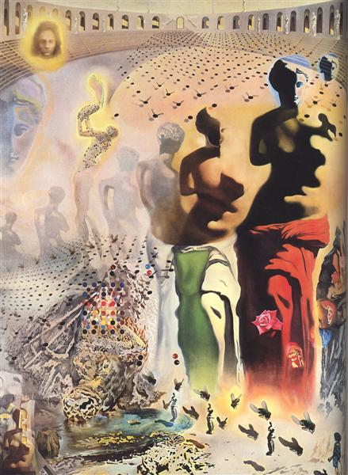
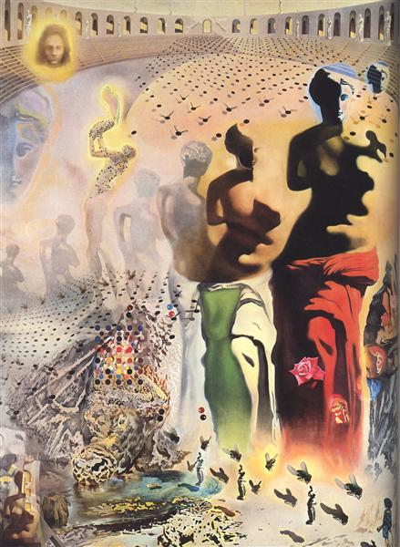

Have no fear of perfection—you’ll never reach it.
Salvador Dalí is among the most versatile and prolific artists of the 20th century and the most famous Surrealist. Though chiefly remembered for his painterly output, in the course of his long career he successfully turned to sculpture, printmaking, fashion, advertising, writing, and, perhaps most famously, filmmaking in his collaborations with Luis Buñuel and Alfred Hitchcock. Dalí was renowned for his flamboyant personality and role of mischievous provocateur as much as for his undeniable technical virtuosity. In his early use of organic morphology, his work bears the stamp of fellow Spaniards Pablo Picasso and Joan Miró. His paintings also evince a fascination for Classical and Renaissance art, clearly visible through his hyper-realistic style and religious symbolism of his later work.

Please feel free to read more about this amazing artist on his Wikipedia entry.